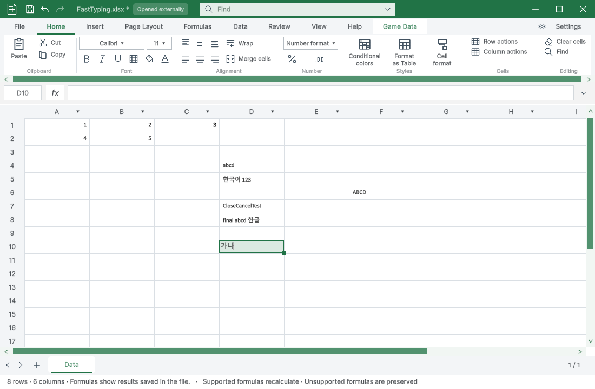
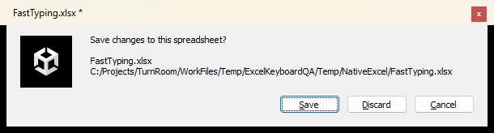
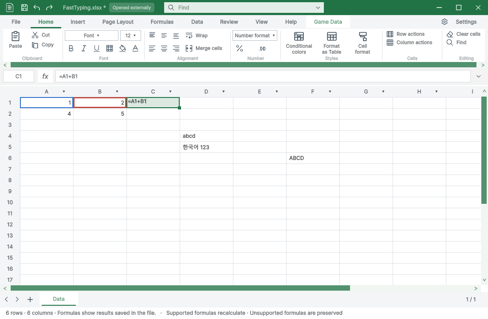
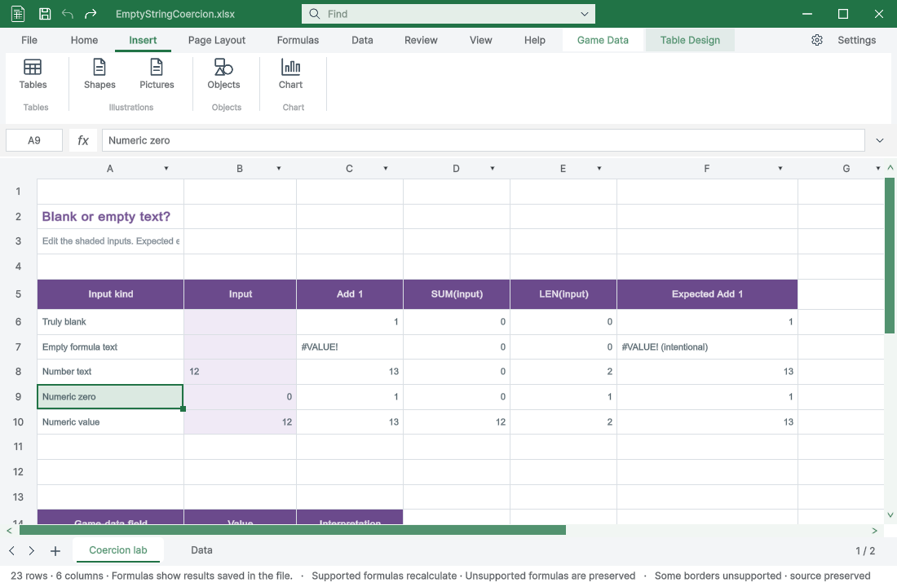
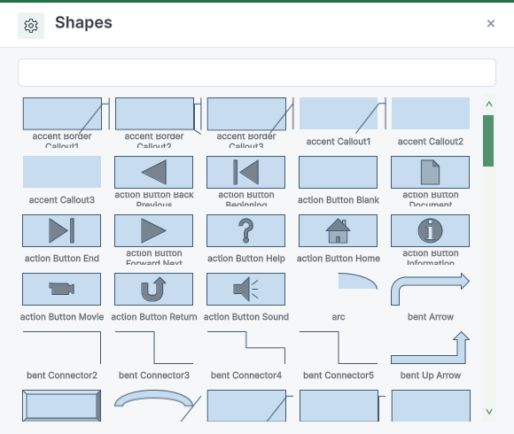
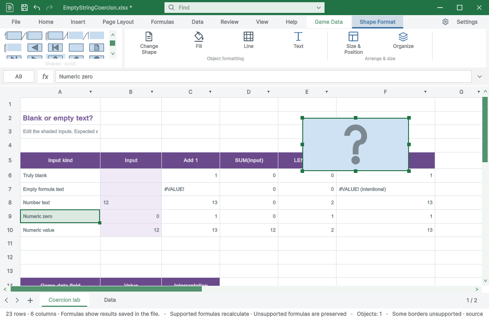
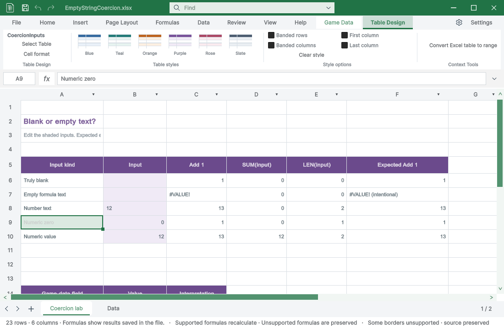
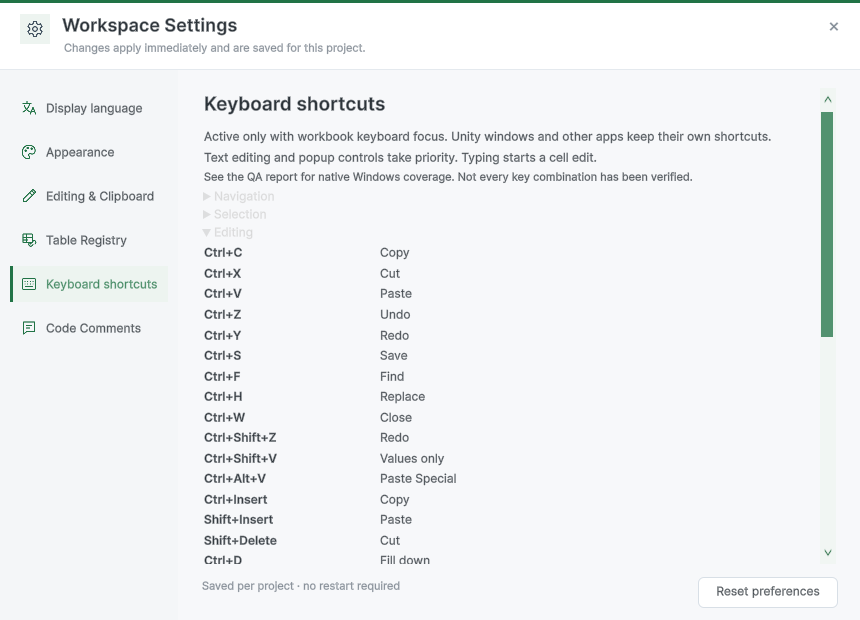
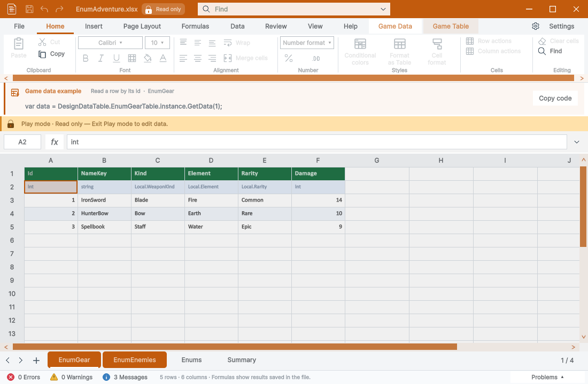
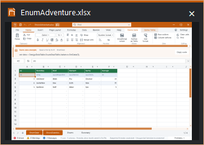

Tracefolio REPORTS & ISSUES
Tracefolio REPORTS & ISSUESWindows API 실제 입력 QA — 입력·단축키·삽입 메뉴 수정
검증 대기실제 Windows 키·마우스로 입력·저장·IME·Unity 충돌·리본을 검증하고 결함을 수정했습니다. 종료 원인과 일부 전환·전체 키 전수 검증은 남았습니다.
작업 결과
실제 입력·저장·IME·F4·반복 편집·리본/도형 QA 및 수정 후 재검사를 수행했습니다. 전체 QA 완료 판정은 보류합니다.
변경 내용
적용 내용
| 재현 문제 | 검증한 원인과 수정 |
|---|---|
| 빈 셀 클릭 실패 | 재로드된 빈 도형 대기 문자열을 활성 상태로 오판. null/empty를 함께 검사 |
| 일반 입력 무시 | 그리드 클릭 후 Unity 텍스트 편집 플래그 잔류. 포커스와 편집 상태 함께 해제 |
| 첫 글자 중복 | 물리 KeyDown과 문자 이벤트에 fallback 문자를 중복 삽입. 실제 문자 이벤트만 삽입 |
| 일부 단축키 무시 | 실제 KeyDown은 오지만 ShortcutManager 명령 콜백이 오지 않는 실행 증거. 같은 창 전용 처리 경로로 연결 |
| Return/Escape 등록 경고 | Unity가 해당 attribute 키를 거부. 등록 대상에서 제외하고 네이티브 처리 유지 |
| 삽입 탭 도형/그림/차트 누락 | 명령 등록이 Copy 실행 람다 안에 중첩. 리본 등록 단계로 이동 |
9개 언어의 단축키 문서와 검증 범위 안내를 갱신했습니다.
검증
| 실제 테스트 | 결과 |
|---|---|
| 셀 클릭·연속 abcd·물리 키 ABCD | 수정 후 통과 |
| 한글 Unicode·실제 한국어 IME rksk → 가나 | 통과 |
| Enter·Tab 확정/이동·Undo/Redo | 통과 |
| Ctrl+S 저장·닫기·재열기 | 값 유지 확인 |
| 편집 중 Ctrl+W → 파일명 표시·Esc 취소·저장 버튼 | 취소 시 입력 유지, 저장 후 재열기 확인 |
| Ctrl+D·Ctrl+Z 반복 | 10회 통과 |
| F2·F4 참조 전환 | $B$1 → B$1 → $B1 → B1 통과 |
| Workbook Ctrl+P·Ctrl+Shift+P | Play/Pause 미실행, 인쇄 미지원 안내·셀 서식 창 표시 |
| Unity GameView Ctrl+P | 재생·중지 통과 |
| 게임 데이터 Play 중 입력 | 읽기 전용 상태·변경 차단 |
| 개별 창 최소화·선반 미리보기·복원 | 해당 창만 상태 변경 |
| ArcadeText PageDown/PageUp | 실제 입력 20회 관찰, 멈춤·시간초과 없음 |
| A9 표 선택·표 디자인 탭 | 표시 통과 |
| 삽입 탭·도형 갤러리·도형 배치·Undo | 수정 후 통과 |
| 최종 모델 회귀 | 단축키2100·수식64·표68·삽입51·툴팁684 = 2967개 통과 |
| 최종 빌드 | 오류0·기존 Templete XML 주석 경고8 |
실제 Win32 SendInput/마우스와 PrintWindow로 확인했습니다. 관찰기는 상태를 읽었으며 키 이벤트를 모의 생성하지 않았습니다. 테스트는 분리한 QA 프로젝트와 복사한 파일에서 수행했습니다. 전체186개 카탈로그 항목이나 모든 Excel 기능·키보드 배열을 통과했다는 의미는 아닙니다.

물리 키로 한글 조합 중인 실제 화면

파일명·경로가 표시된 실제 저장 확인창

F4 및 참조 셀 강조

수정 후 실제 삽입 리본

실제 도형 목록

도형 배치 및 도형 서식 탭

표 셀 선택 시 표 디자인 탭

단축키 설정과 검증 범위 안내

Play 중 게임 데이터 잠금

최소화 목록의 실제 미리보기
재시작 후 실제 Unity SceneView 개체 복제(1→2)와 ProjectBrowser 파일 복제(1→2)가 통과했습니다. 근거: scene-real-duplicate-selected.json, project-real-duplicate.json.
남은 사항
- 최초 Scene/Project 검사는 GameView 포커스 때문에 미통과로 보존했습니다. 재시작 후 실제 SceneView·ProjectBrowser 창에서 Ctrl+D를 다시 실행하여 각각 개체1→2, 파일1→2 복제를 확인했습니다.
- 격리 QA Unity는 Game 탭 더블클릭 뒤 종료되었습니다. 직전 로그에 Maximized serialized file backup not found가 있으며 종료 원인은 미확인입니다. 재시작 후 Scene/Project 입력 검사는 통과했습니다. 종료 원인 자체는 미확인으로 보존합니다.
- ArcadeText 관찰값은 테스트 도구 지연을 포함하므로 FPS나 렌더 성능 수치로 해석하지 않습니다.
- 표 프리셋은 선택됐지만 기존 직접 셀 채우기 색상이 우선하여 보라색이 유지됩니다. 이 사용성 문제는 남았습니다.
- 다른 앱/모든 키 조합·모든 28개 워크북·애니메이션 중간 프레임 전수 검증은 완료하지 않았습니다.
- 교훈 검토: 실제 키 이벤트와 관찰 지연을 분리해 기록했습니다. 기존 전역 실제 실행·증거 규칙과 중복되므로 전역 지침 변경 없음.
작업 시간
- 제안 시간: 30~50분
- 실제로 완료된 시간: 2026-10-31 11:53:44 KST 시작 → 12:35:08 KST 핵심 검증·보고서 작성, 41분24초. 배포 확인은 별도이며 전체 전수 QA 완료 판정은 보류합니다.
- XERJ: 사용 — XERJ로 단축키/포커스 후보를 찾고 현재 소스 및 실제 이벤트 로그와 대조했습니다.